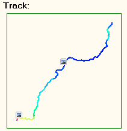
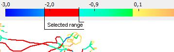

Two types of projects
The program has two modifications:
Track-Album: Traveller's Diary - is intended for tourists, travellers, cyclists, skiers and all who move on land. see more...
Track-Album: Flight Log - is intended for paragliding/hanggliding and other ultra light aviation pilots who fly. see more...
The traveller's diary, log books for ground sports and flight logs for airborne sports can be kept in the one program which takes into account differences in characteristics of these two types, what favorably distinguish it from common purpose spread sheets.
Keep records of your flights/rides with or without GPS
Tracks can be attached to records, unlike other GPS software where you have to have GPS tracks to keep records. A record has all necessary fields for gathering statistics of the project type. Auto completion feature makes record editing easier. New version also introduces greatly improved notes editor that now supports BBCodes and note text could be copied into most popular forums! see more....Extended photo handling functions
Photos can be attached to records and more you can now see it's metadata like - creation date, exposure, aperture it is very useful for advanced users.One of the most exciting features: the program calculates photo's geo coordinates depending on photo's creation time and track points and shows the photos in the right place on the track!

GPS Coordinates can be written into photo's EXIF section manually and automatically See more...
Download tracks and points from a GPS device
The most frequent operations with GPS - downloading of tracks and waypoints and uploading of waypoints are implemented. A record can be created easily from a downloaded track, some fields are filled automatically. At the moment Garmin and Magellan GPS devices are supported.Read more...
Different tracks and waypoints file formats are supported
The program can read the most popular formats: IGC, OZI, TRK, GPX, WPT. Internal format for storing tracks and waypoints is GPX - open standard format.Analysis of track/subtrack properties
Select a part of a track on elevation chart to view in details it's properties: velocity, height difference, rate of climb, glide ratio, slope etc. Convenient feature: no need to click menus - properties are shown as soon as subtrack is selected. Read more...Colored tracks
Tracks are colored for better visual perception by different parameters. An original feature here - you can set value range (select with mouse pointer) right on legend:
View colored 3D tracks and waypoints on 'Google Earth'
'Google Earth' is the best program for viewing 3D tracks on 3D earth map. Forget pain of finding maps, height data. Also Track-Album converts tracks and waypoints to Google's KML file format. It is possible to color tracks by different parameters and also Animate 3D tracks!Read more...
Track measurement
The program can automatically calculate best track task and also allows to add task points manually.Automatic detection of start and finish points available and for flight tracks towing is detected automatically.

Read more...
Working with waypoints
Standard operations are implemented - creating, editing, downloading/uploading to GPS, storing in different folders.It is convenient to create a waypoint using coordinates from 'Google Earth'(Read more)
Statistics
If you ever kept records on a paper you definitely evaluate highly how it is easy now to calculate statistics - the program does it for you!Besides statistics available is dependent on project type.
Multilingual
Program interface an be translated to any language.It is always more pleasant to use program in your native language.
See more: Download